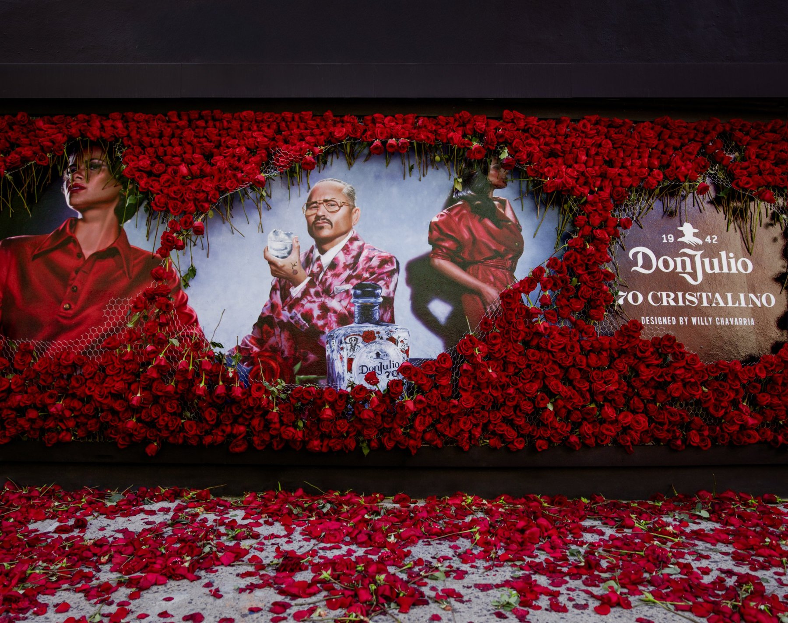
fashion’s biggest night. willy chavarría x don julio hosted the 2025 met gala after-party at the mark hotel, with hot dog and tequila pairings.
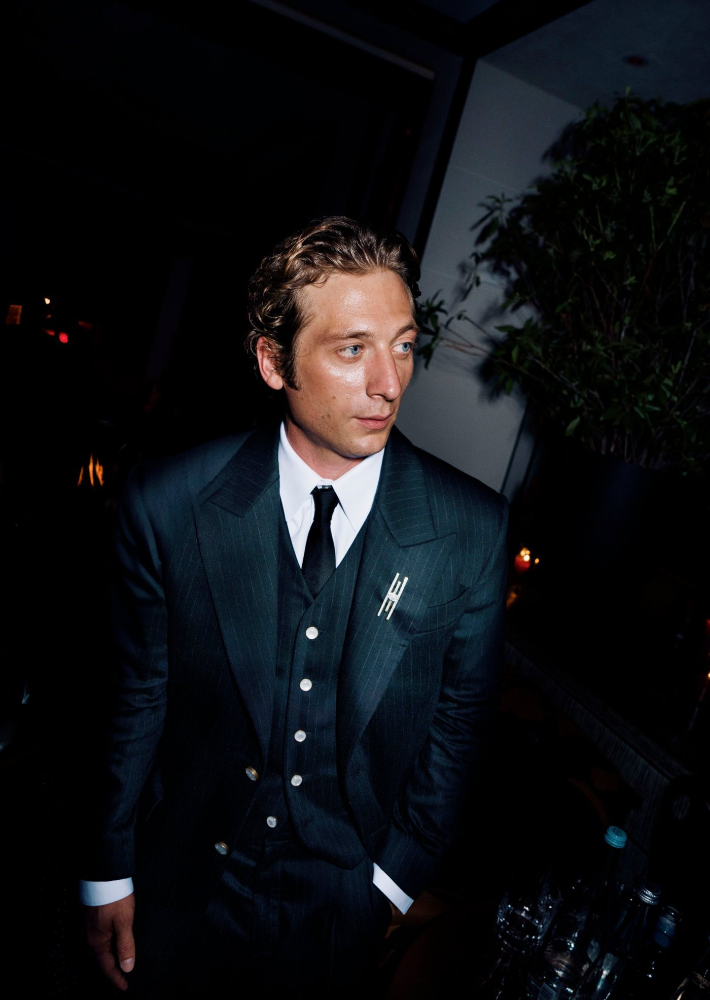
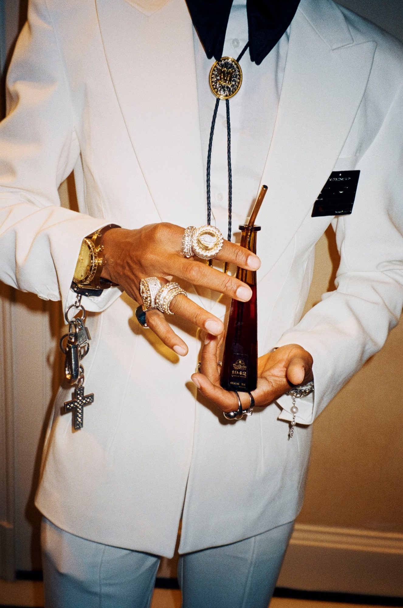
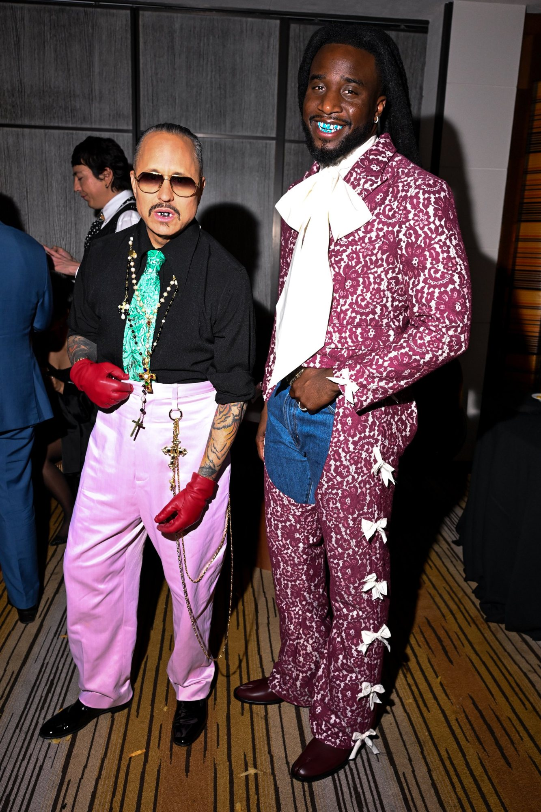
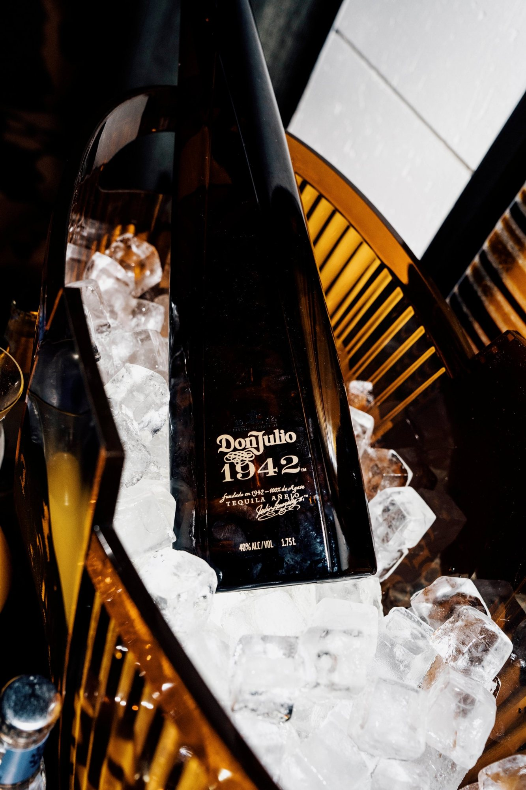
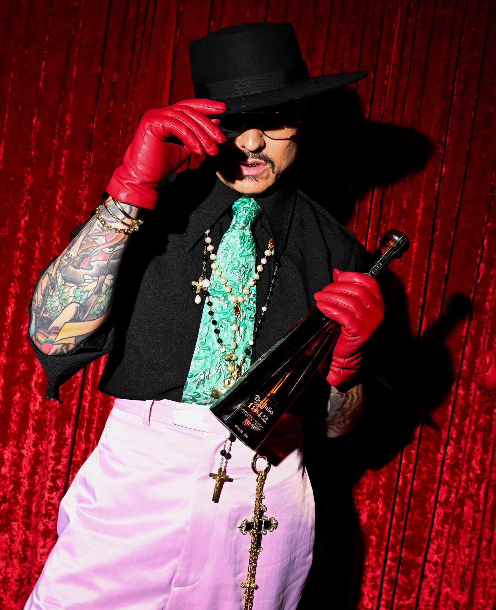
peggy gou x don julio 1942: one limited-edition bottle, 194구, from the streets to the screen. gou big or go home.
sustainability, told through education and art. partnered with mexican artists to share how don julio is made in the highlands of jalisco.
a new willy chavarría artist edition bottle, inspired by día de muertos. we launched it at nyfw with a wall of 3,000 red roses, free to take home.

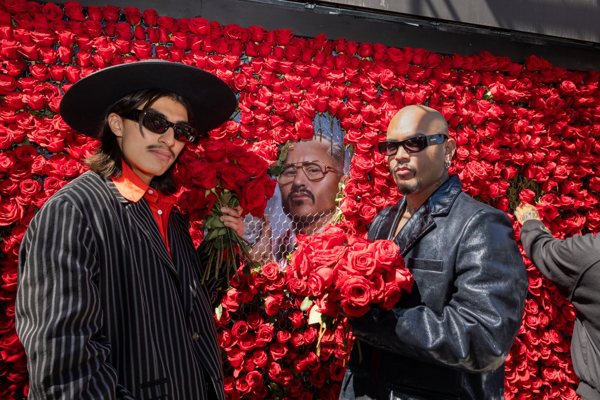
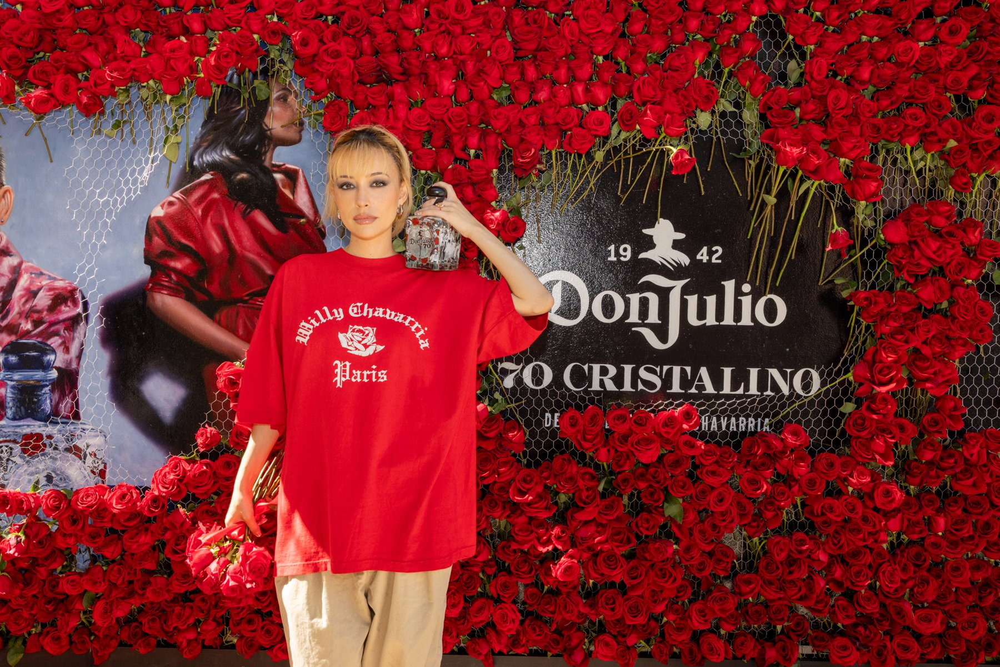
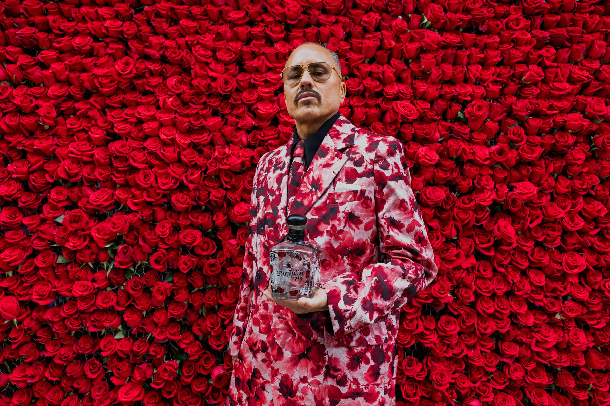
official sponsor of the fifa world cup 2026, with a special 1942 edition bottle.
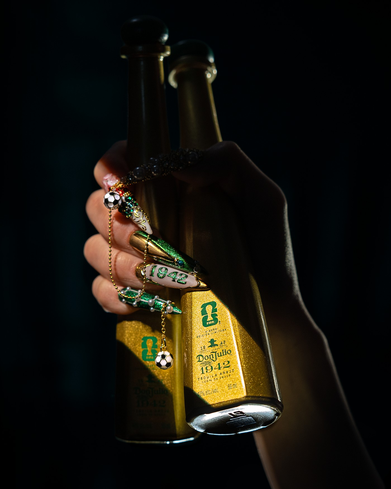
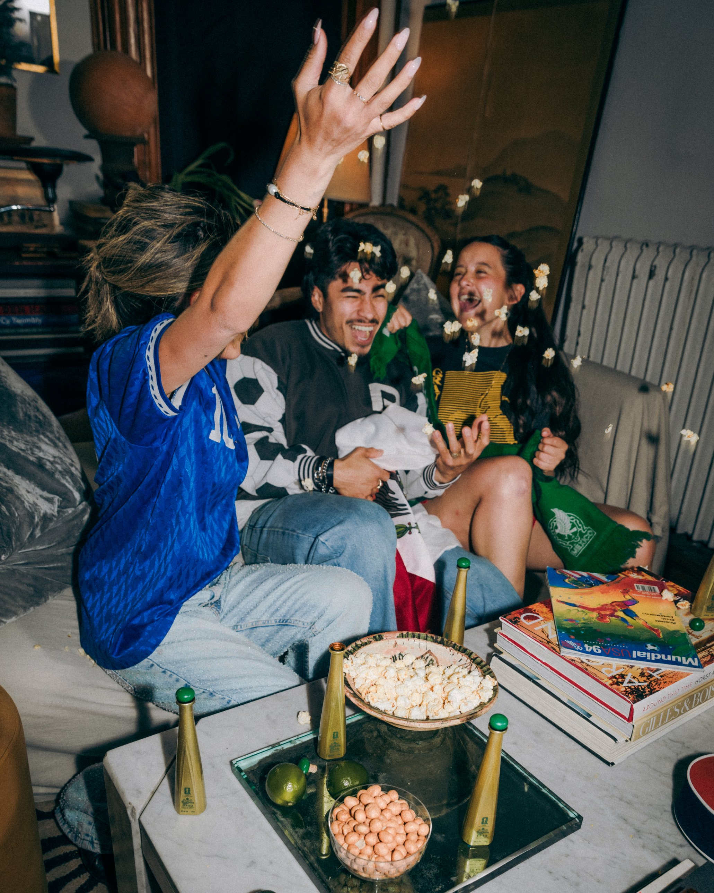
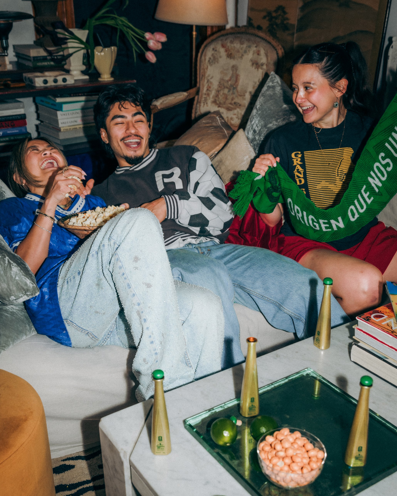
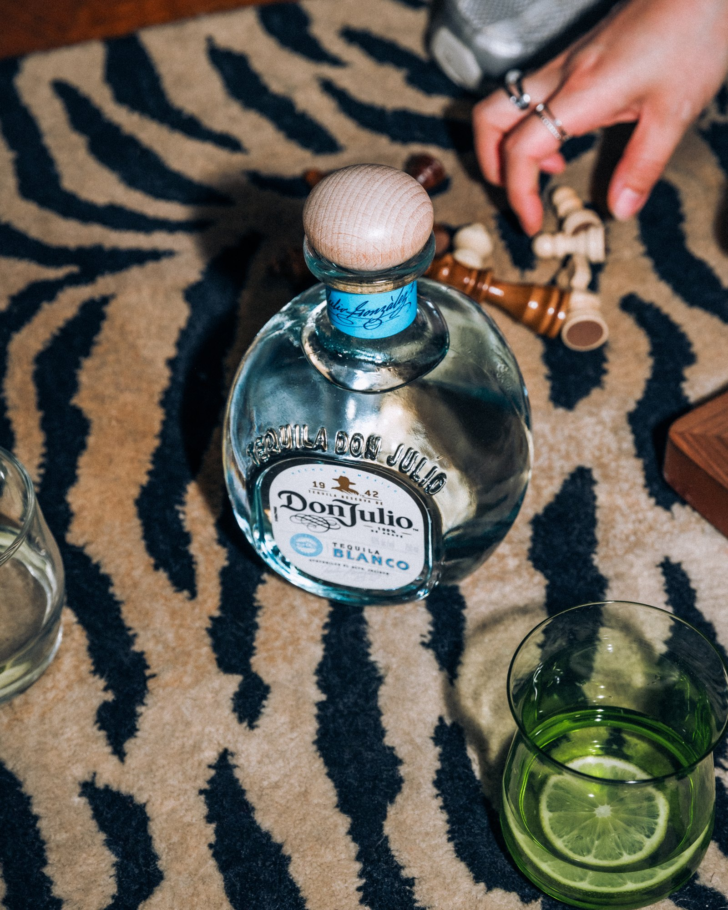
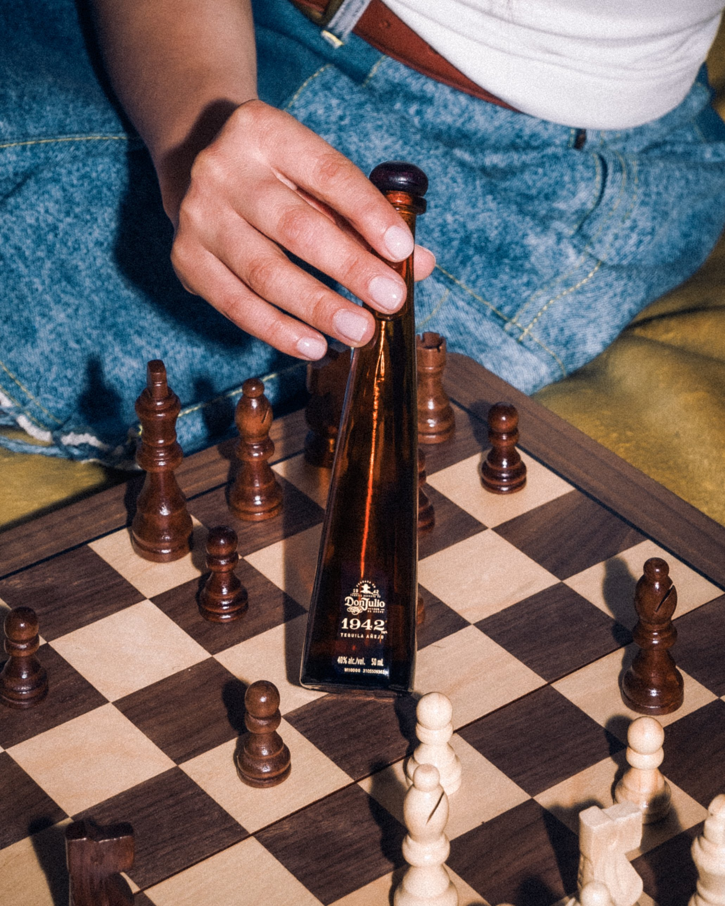